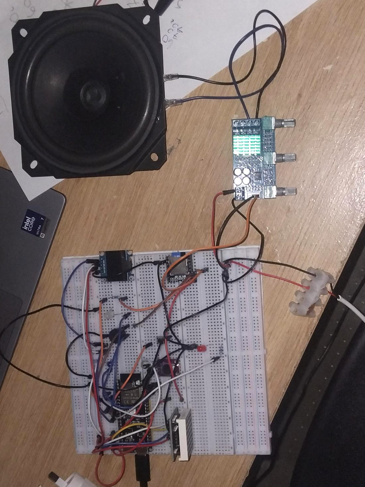
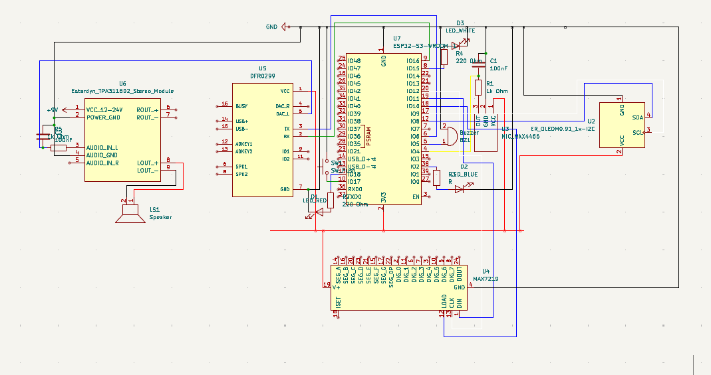

All projects
LEXIN voice-controlled assistant
ESP32-S3 device that wakes on “Hi Lexin”, sends a 3-second recording to Wit.ai, then switches a light, animates an LED-matrix heart or sets a mood with music.
FocusEmbedded systems
ControllerESP32-S3
FrameworkESP-IDF
ProtocolsADC, SPI, UART, I2C
The problem
Build a hands-free voice interface where the wake word is detected on the device, so audio only goes to the cloud after the wake phrase.
Worth knowing
- Written from datasheets with no external library: the MAX7219 driver (bit-banged), the DFPlayer Mini UART protocol, the Wit.ai client and JSON intent parsing, and the main state machine.
- Four communication protocols on one microcontroller, with separately powered subsystems.
- The project report covers bugs that only appeared once modules were combined.
How it works
- On-device wake-word detection with Espressif’s esp-sr (WakeNet).
- A 3-second recording from a MAX4466 microphone is sent to Wit.ai for intent classification.
- A state machine turns the intent into one of three responses: a light, an animated heart on a MAX7219 matrix, or a red mood light with music.
- An SSD1306 OLED shows the system state throughout each interaction.
Images


Files in the repository
| main/main.c | Application code |
| main/hilexin.h | Wake-word model header |
| main/README.md | Hardware and dependencies |
| LEXIN_Project_Report.docx | Project report |
| LEXIN_Block_Diagram.pptx | Block diagram |
| KiCad_Circuit_Design/circuit.kicad_sch | Schematic with custom components |